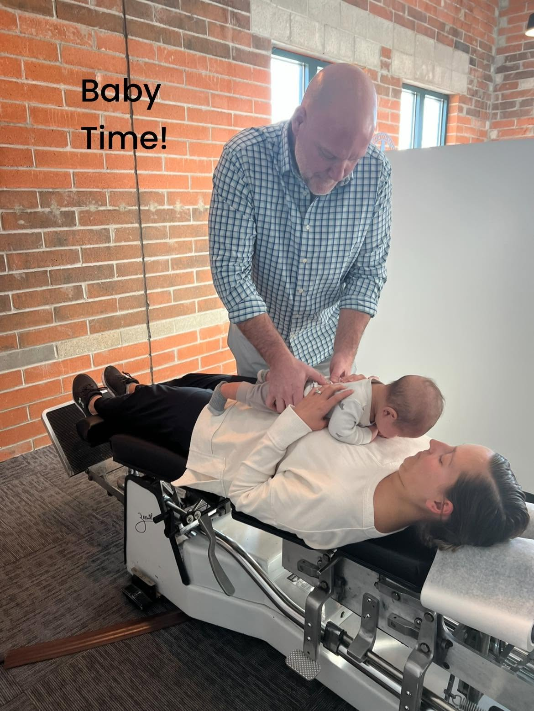

Meet Dr. Rob Dorn
Dr. Rob has been practicing and serving Oconomowoc and the surrounding Lake Country area for 20 years. He graduated from Northwestern Health Sciences University in 2004 and headed straight back to Oconomowoc to open a solo practice.
He's a former Chiropractic Society of Wisconsin board member and is still a member, along with the International Chiropractors Association. Outside the office, family comes first: his son Finnegan is a constant source of enjoyment and unconditional love. He attends Whitestone Church and enjoys camping, fishing, and working out.

From first adjustments to "seasoned" spines
Dr. Rob's own chiropractic story started in childhood, so babies, kids, athletes, parents, and grandparents all get care adapted to their age, size, and goals. Twenty years in, many patients are second-generation.